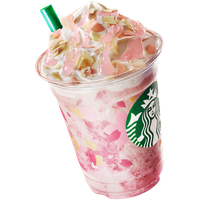

It's more than coffee
It's Starbucks
Os sócios Jerry Baldwin, Zev Siegel e Gordon Bowker inauguraram a primeira loja em 1971, em Seattle. De forma resumida, o projeto surgiu porque os três eram apaixonados por cafés e chás. Para tirar a ideia do papel, eles pediram dinheiro emprestado e nomearam como Starbucks como uma uma referência ao livro Moby Dick
Ler mais


- 